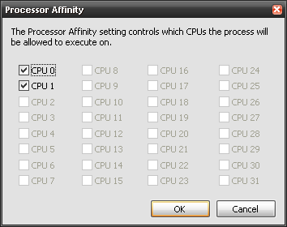
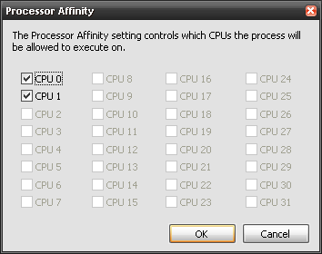

Affinity_Set()
Sets the CPU to be
used in Dual/Quad/Multi core processors / Effectively, this function
allows you to choose which AHK script uses what
processor.
Usage: Use Affinity_Set( n ) on the top of your script, where n will be 1 if you want the script to use the first processor, 2 if you want the script to use the second processor.. and 3 to utilise both of them
MSDN Links: SetProcessAffinityMask , GetProcessAffinityMask
Some old applications do not run properly when run with dual/multi core
mode and require the Affinity to be set to a single processor.
Here is an example to set Affinity manually: To set the Affinity for Calculator, start the Windows Task Manager, find the process Calc.exe, right click and select Affinity, and set the affinity by checking on/off the relevant CPU's.
 ___________ ___________
To achieve the same programmatically,
| Code: | Process, Exist, calc.exe
PID := errorLevel
Affinity_Set( 3, PID ) ; presuming Affinity.ahk is available in User Library
|
|
|
|
|